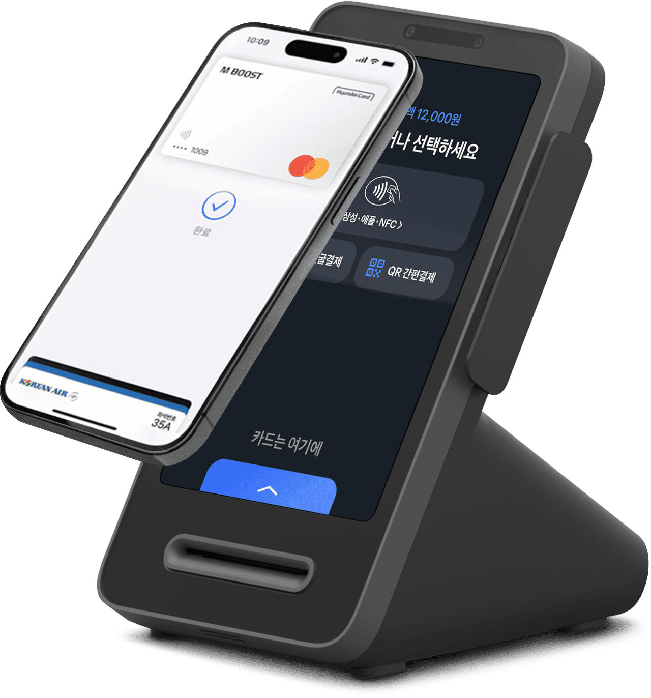
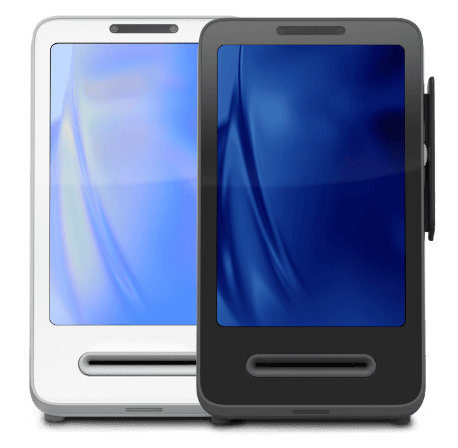

손님이 결제하는 순간 포인트 적립과 리뷰 작성이 이어집니다. 부탁드릴 필요도, 따로 안내할 필요도 없습니다.
신청 후 담당자가 연락드려 업종·매출 규모에 맞는 조건을 안내해드립니다.

전 카드사 가맹 · 간편결제 통합 지원
단말기 대금, 방문 설치비, 초기 세팅비를 전부 청구하지 않습니다.
서류 세 가지만 준비하시면 기사가 방문해 설치까지 마칩니다.
네이버페이, 토스페이, 카드, 삼성·애플페이까지 한 대에서.
"무료"라고 해놓고 나중에 청구되는 항목이 있는지부터 확인하셔야 합니다. 저희 조건은 아래 세 가지가 전부입니다.
단말기 본체 값, 방문 설치비, 초기 세팅비 모두 받지 않습니다. 계약 시 청구되는 금액이 없습니다.
약정 3년 유지가 조건입니다. 기간 동안 정상적으로 운영하시면 추가로 부담하실 비용은 없습니다.
수수료는 여신금융협회 고시에 따라 매출 규모별로 적용됩니다. 영세·중소 가맹점 우대 요율이 그대로 적용됩니다.
결제 수단은 이제 편의 문제가 아니라, 손님이 가게를 고르는 기준이 되었습니다.
여기 네이버페이 되나요?
물어보고 안 된다고 하면 그냥 나가는 손님, 생각보다 많습니다. 적립을 놓치기 싫어서입니다.
리뷰 좀 남겨주세요
매번 부탁하기도 민망하고, 직원도 눈치를 봅니다. 그래서 리뷰는 몇십 개에서 멈춰 있습니다.
우리 가게가 검색에 안 나와요
플레이스 순위는 결국 방문·결제·리뷰 데이터가 좌우합니다. 광고비만으로는 한계가 있습니다.
토스 프론트는 카드, 삼성페이, 애플페이, QR 간편결제를 한 대로 받는 단말기입니다. 7인치 화면이 손님 쪽을 향해 있어 결제 금액과 방법을 손님이 직접 보고 고릅니다. 결제 수단을 하나 늘리는 게 아니라, 사람들이 매일 여는 앱 안에 우리 가게를 올려두는 일입니다.

토스페이 가맹점은 토스 앱 내 혜택·쿠폰 영역에 노출될 기회가 생깁니다. 따로 광고비를 태우지 않아도 손님이 앱을 켜다가 우리 가게를 발견합니다.
IC·MSR·NFC를 모두 지원해 카드 삽입, 삼성페이·애플페이 터치, QR 스캔이 한 대에서 끝납니다. 피크 타임에 계산 줄이 짧아집니다.
토스는 신규 이용 고객에게 결제 금액대별 적립 혜택을 자주 겁니다. 손님 입장에서는 토스페이 되는 가게를 다시 찾을 이유가 생깁니다.
카페·베이커리, 음식점·술집, 뷰티·피트니스 등 업종별 POS 기능을 지원합니다. 결제 내역과 일일 매출을 단말기와 폰에서 바로 확인하실 수 있습니다.
두 서비스는 겹치지 않습니다. 네이버페이는 검색에서 발견되게 만들고, 토스페이는 앱에서 발견되게 만듭니다.
한 대의 단말기에서 네이버페이와 토스페이를 모두 받을 수 있고, 설치비는 어느 쪽이든 0원입니다.
사업자등록증이 있고 카드 결제를 받고 계시면 업종 제한 없이 설치 가능합니다. 신규 오픈 매장도 함께 진행하실 수 있습니다.
복잡한 과정 없이 네 단계면 끝납니다. 준비하실 서류는 세 가지뿐입니다.
성함과 연락처, 업종만 남겨주시면 됩니다. 1분이면 끝납니다.
담당자가 연락드려 매출 규모에 맞는 수수료와 조건을 안내드립니다.
사업자등록증, 신분증, 통장 사본. 비대면 전자계약으로 진행합니다.
기사가 매장에 방문해 설치하고 사용법까지 알려드립니다.
단말기 대금, 방문 설치비, 초기 세팅비는 청구하지 않습니다. 3년 가맹 약정이 조건이며, 약정을 정상적으로 유지하시면 추가 부담은 없습니다. 다만 카드 수수료와 통신 회선 요금은 별도이며, 상담 시 정확한 금액을 안내드립니다.
단순 변심으로 중도 해지하시는 경우 잔여 기간에 따른 위약금이 발생할 수 있습니다. 폐업·양도 등 불가피한 사유는 별도 기준이 적용되니, 계약 전 상담에서 반드시 확인하시고 진행하시길 권해드립니다.
가능합니다. 기존 단말기를 그대로 두고 추가로 설치하시거나, 교체하실 수 있습니다. 기존 계약에 약정이 남아 있는 경우에는 상담 시 함께 확인해드립니다.
아닙니다. 한 대의 단말기에서 네이버페이, 토스페이는 물론 신용·체크카드, 삼성페이, 애플페이, 제로페이까지 함께 받으실 수 있습니다.
카드 수수료율은 여신금융협회 고시에 따라 연 매출 규모별로 정해집니다. 영세·중소 가맹점에 해당하시면 우대 수수료율이 그대로 적용되며, 저희가 임의로 올리거나 내릴 수 없습니다.
아닙니다. 리뷰를 대신 작성해드리는 서비스가 아닙니다. 결제를 마친 손님에게 리뷰 작성 화면과 적립 혜택이 자동으로 안내되어, 사장님이 따로 부탁드리지 않아도 손님이 직접 리뷰를 남기게 되는 구조입니다.
성함과 연락처만 남겨주시면 담당자가 연락드려
우리 매장에 맞는 조건을 안내해드립니다. 상담은 무료입니다.